README 优化报告：readmex 项目
项目背景
本次优化报告基于 GitHub 开源项目 readmex 的中英双语 README 文档。readmex 是一个 AI 驱动的 README 生成器。
分析维度： - 语言润色（术语、语法、结构） - 本地化适配（文化习惯、用户画像）
优化点汇总
| 序号 | 维度 | 问题诊断 | 优化方案 |
|---|---|---|---|
| 1 | 语言润色 | 术语不一致："Built With" vs "技术栈" | 统一为"技术栈 / Technology Stack" |
| 2 | 语言润色 | Key Features 列表动词形式不一致 | 统一为动词原形 |
| 3 | 语言润色 | 第二句信息密度过高，罗列7个元素 | 拆分为列表形式 |
| 4 | 语言润色 | Roadmap 列表项格式不一致 | 统一为动词短语开头 |
| 5 | 语言润色 | 冗余套话"This is an example..." | 删掉，直接进入正题 |
| 6 | 本地化适配 | 英文版出现 QQ 群二维码 | 删除或添加说明文字 |
| 7 | 本地化适配 | Star History 在英文版占位过大 | 缩小或侧边放置 |
| 8 | 本地化适配 | 命令行示例对新手不友好 | 增加路径替换提示 |
详细优化对照
优化点 1：术语不一致
问题：中英文版本术语不统一，英文用"Built With"，中文用"技术栈"。
原文截图：
| 英文原文 | 中文原文 |
|---|---|
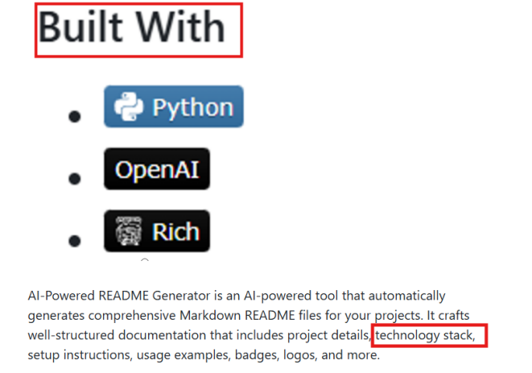 |
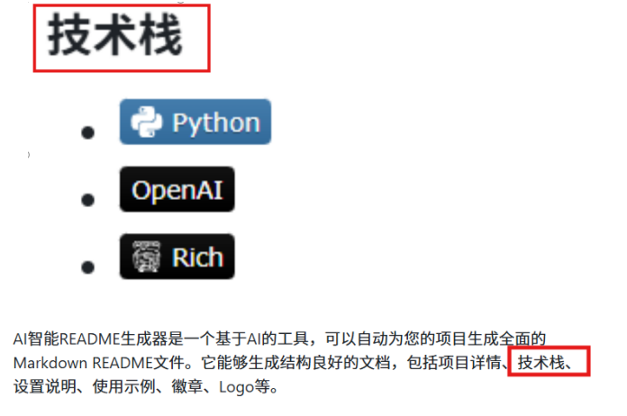 |
修改建议：统一为"技术栈 / Technology Stack"，保持双语一致性。
优化点 2：列表项平行结构不一致
问题：Key Features 列表中，第一项用动词原形，后两项用第三人称单数。
原文截图：
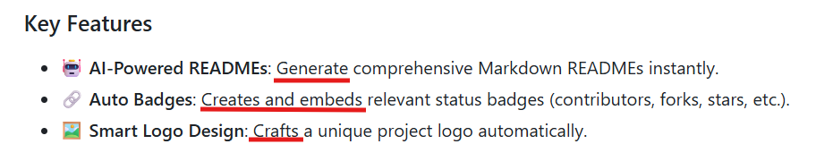
修改建议：统一为动词原形：
🤖 AI-Powered READMEs: Generate comprehensive Markdown READMEs instantly.
🔗 Auto Badges: Create and embed relevant status badges.
🖼️ Smart Logo Design: Craft a unique project logo automatically.
优化点 3：信息密度过高
问题：一句话罗列7个元素，用户阅读负担重。
原文截图：
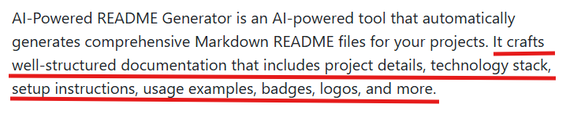
修改建议：拆分为列表形式：
AI-Powered README Generator automatically creates comprehensive Markdown README files for your projects. Each README includes:
- Project details and technology stack
- Setup instructions and usage examples
- Badges, logos, and other visual elements
优化点 4：Roadmap 列表项格式不一致
问题：三个列表项虽然都是名词短语，但介词结构不一致。
原文截图：
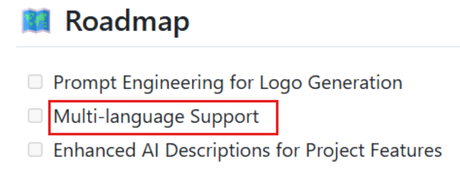
修改建议：统一为动词短语开头，更符合“待办事项”的语境：
Prompt Engineering for Logo Generation
Mlti-language Support for README Content
Enhanced AI Descriptions for Project Features
优化点 5：冗余套话
问题："This is an example of how you may give instructions on setting up your project locally." 语句冗余，可删除掉一部分。
原文截图：
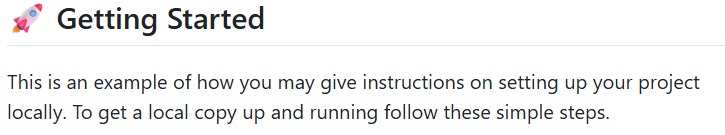
修改建议：删掉，直接进入正题：
To get a local copy up and running, follow these steps.
优化点 6：本地化适配 - QQ群二维码
问题：英文版出现 QQ 群二维码，英文用户不知道 QQ 是什么。
原文截图：
| 英文版 QQ 群 | 中文版 QQ 群 |
|---|---|
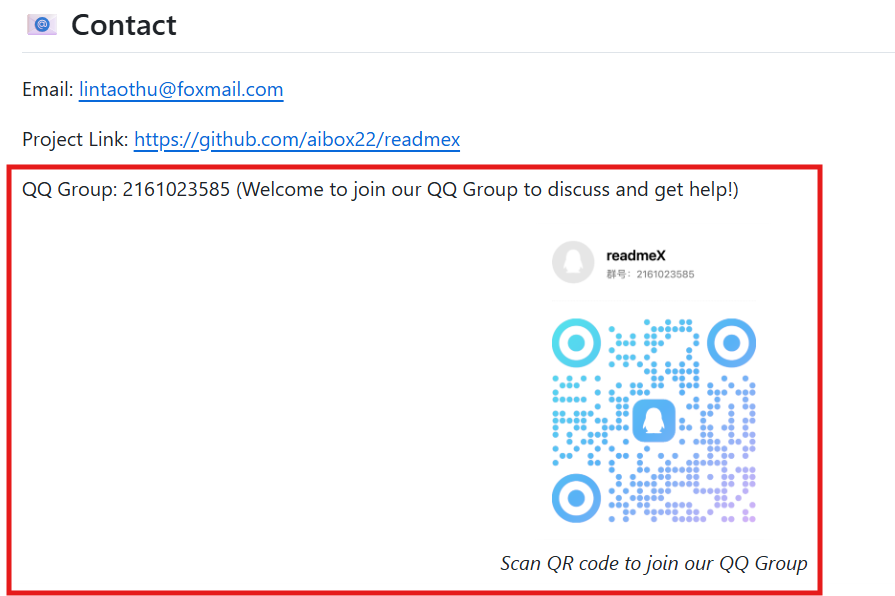 |
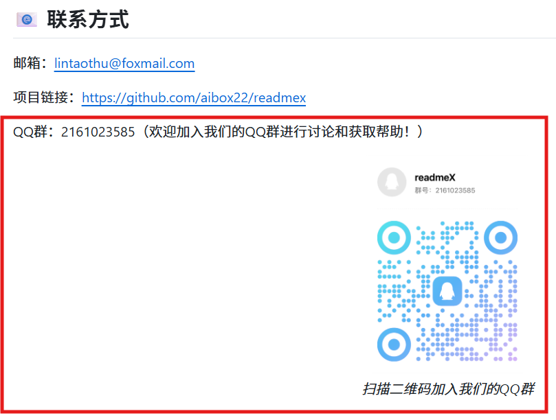 |
修改建议：
- 英文版：删除 QQ 群二维码，或添加说明"For Chinese users"
- 中文版：保留并突出显示
优化点 7：本地化适配 - Star History Chart
问题：英文用户更习惯 GitHub 原生 star 数据，Star History Chart 占位过大。
原文截图：
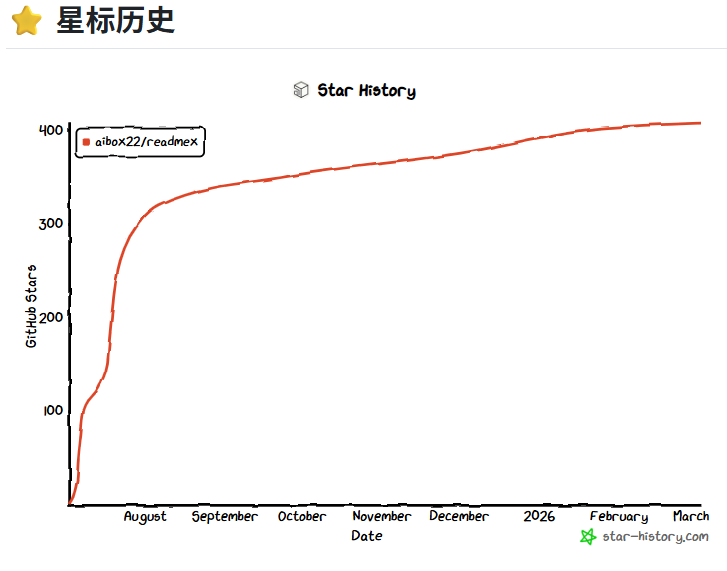
修改建议：
- 英文版：缩小图表或放在侧边
- 中文版：保留并强调，开头加一句"⭐ 已有 XX stars，值得信赖"
优化点 8：本地化适配 - 命令行示例
问题：中文初学者可能不知道 /path/to/your/project 要替换成实际路径。
原文截图：
| 英文版命令行 | 中文版命令行 |
|---|---|
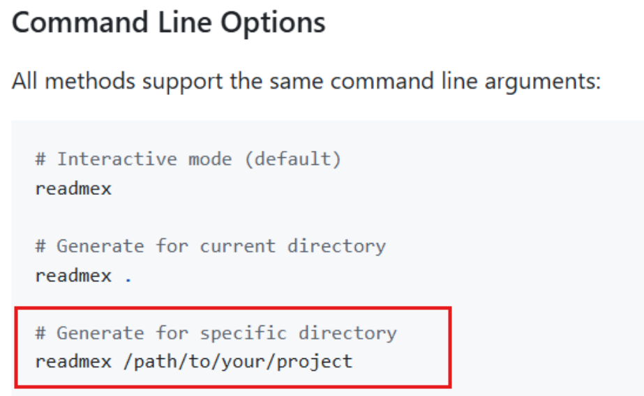 |
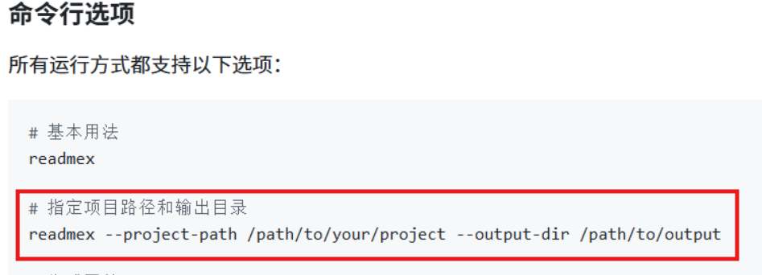 |
修改建议（中文版）：
# 指定项目路径和输出目录（请将路径替换成你的实际路径）
readmex --project-path /你的/项目/路径 --output-dir /你的/输出/目录